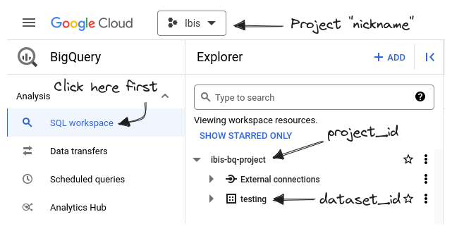

BigQuery
https://cloud.google.com/bigquery


Install
Install Ibis and dependencies for the BigQuery backend:
Install with the bigquery extra:
pip install 'ibis-framework[bigquery]'And connect:
import ibis
con = ibis.bigquery.connect()- 1
- Adjust connection parameters as needed.
Install for BigQuery:
conda install -c conda-forge ibis-bigqueryAnd connect:
import ibis
con = ibis.bigquery.connect()- 1
- Adjust connection parameters as needed.
Install for BigQuery:
mamba install -c conda-forge ibis-bigqueryAnd connect:
import ibis
con = ibis.bigquery.connect()- 1
- Adjust connection parameters as needed.
Connect
ibis.bigquery.connect
con = ibis.bigquery.connect(
project_id="ibis-bq-project",
dataset_id="testing",
)ibis.bigquery.connect is a thin wrapper around ibis.backends.bigquery.Backend.do_connect.
Connection Parameters
do_connect
do_connect(self, project_id=None, dataset_id='', credentials=None, application_name=None, auth_local_webserver=True, auth_external_data=False, auth_cache='default', partition_column='PARTITIONTIME', client=None, storage_client=None)
Create a Backend for use with Ibis.
Parameters
| Name | Type | Description | Default |
|---|---|---|---|
project_id |
str | None | A BigQuery project id. | None |
dataset_id |
str | A dataset id that lives inside of the project indicated by project_id. |
'' |
credentials |
google.auth.credentials.Credentials | None | Optional credentials. | None |
application_name |
str | None | A string identifying your application to Google API endpoints. | None |
auth_local_webserver |
bool | Use a local webserver for the user authentication. Binds a webserver to an open port on localhost between 8080 and 8089, inclusive, to receive authentication token. If not set, defaults to False, which requests a token via the console. | True |
auth_external_data |
bool | Authenticate using additional scopes required to query external data sources <https://cloud.google.com/bigquery/external-data-sources>_, such as Google Sheets, files in Google Cloud Storage, or files in Google Drive. If not set, defaults to False, which requests the default BigQuery scopes. |
False |
auth_cache |
str | Selects the behavior of the credentials cache. 'default' Reads credentials from disk if available, otherwise authenticates and caches credentials to disk. 'reauth' Authenticates and caches credentials to disk. 'none' Authenticates and does not cache credentials. Defaults to 'default'. |
'default' |
partition_column |
str | None | Identifier to use instead of default _PARTITIONTIME partition column. Defaults to 'PARTITIONTIME'. |
'PARTITIONTIME' |
client |
bq.Client | None | A Client from the google.cloud.bigquery package. If not set, one is created using the project_id and credentials. |
None |
storage_client |
bqstorage.BigQueryReadClient | None | A BigQueryReadClient from the google.cloud.bigquery_storage_v1 package. If not set, one is created using the project_id and credentials. |
None |
Returns
| Type | Description |
|---|---|
| Backend | An instance of the BigQuery backend. |
ibis.connect URL format
In addition to ibis.bigquery.connect, you can also connect to BigQuery by passing a properly formatted BigQuery connection URL to ibis.connect
con = ibis.connect(f"bigquery://{project_id}/{dataset_id}")This assumes you have already authenticated via the gcloud CLI.
Finding your project_id and dataset_id
Log in to the Google Cloud Console to see which project_ids and dataset_ids are available to use.

BigQuery Authentication
The simplest way to authenticate with the BigQuery backend is to use Google’s gcloud CLI tool.
Once you have gcloud installed, you can authenticate to BigQuery (and other Google Cloud services) by running
gcloud auth loginFor any authentication problems, or information on other ways of authenticating, see the gcloud CLI authorization guide.
bigquery.Backend
compile
compile(self, expr, limit=None, params=None, **_)
Compile an Ibis expression.
Parameters
| Name | Type | Description | Default |
|---|---|---|---|
expr |
ir.Expr | Ibis expression | required |
limit |
str | None | For expressions yielding result sets; retrieve at most this number of values/rows. Overrides any limit already set on the expression. | None |
params |
Mapping[ir.Expr, Any] | None | Named unbound parameters | None |
Returns
| Type | Description |
|---|---|
| Any | The output of compilation. The type of this value depends on the backend. |
create_schema
create_schema(self, name, database=None, force=False, collate=None, **options)
Create a schema named name in database.
Parameters
| Name | Type | Description | Default |
|---|---|---|---|
name |
str | Name of the schema to create. | required |
database |
str | None | Name of the database in which to create the schema. If None, the current database is used. |
None |
force |
bool | If False, an exception is raised if the schema exists. |
False |
create_table
create_table(self, name, obj=None, *, schema=None, database=None, temp=None, overwrite=False, default_collate=None, partition_by=None, cluster_by=None, options=None)
Create a table in BigQuery.
Parameters
| Name | Type | Description | Default |
|---|---|---|---|
name |
str | Name of the table to create | required |
obj |
pd.DataFrame | pa.Table | ir.Table | None | The data with which to populate the table; optional, but one of obj or schema must be specified |
None |
schema |
ibis.Schema | None | The schema of the table to create; optional, but one of obj or schema must be specified |
None |
database |
str | None | The BigQuery dataset in which to create the table; optional | None |
temp |
bool | None | This parameter is not yet supported in the BigQuery backend | None |
overwrite |
bool | If True, replace the table if it already exists, otherwise fail if the table exists |
False |
default_collate |
str | None | Default collation for string columns. See BigQuery’s documentation for more details: https://cloud.google.com/bigquery/docs/reference/standard-sql/collation-concepts | None |
partition_by |
str | None | Partition the table by the given expression. See BigQuery’s documentation for more details: https://cloud.google.com/bigquery/docs/reference/standard-sql/data-definition-language#partition_expression | None |
cluster_by |
Iterable[str] | None | List of columns to cluster the table by. See BigQuery’s documentation for more details: https://cloud.google.com/bigquery/docs/reference/standard-sql/data-definition-language#clustering_column_list | None |
options |
Mapping[str, Any] | None | BigQuery-specific table options; see the BigQuery documentation for details: https://cloud.google.com/bigquery/docs/reference/standard-sql/data-definition-language#table_option_list | None |
Returns
| Type | Description |
|---|---|
| Table | The table that was just created |
create_view
create_view(self, name, obj, *, database=None, overwrite=False)
Create a new view from an expression.
Parameters
| Name | Type | Description | Default |
|---|---|---|---|
name |
str | Name of the new view. | required |
obj |
ir.Table | An Ibis table expression that will be used to create the view. | required |
database |
str | None | Name of the database where the view will be created, if not provided the database’s default is used. | None |
overwrite |
bool | Whether to clobber an existing view with the same name | False |
Returns
| Type | Description |
|---|---|
| Table | The view that was created. |
database
database(self, name=None)
Return a Database object for the name database.
Parameters
| Name | Type | Description | Default |
|---|---|---|---|
name |
str | None | Name of the database to return the object for. | None |
Returns
| Type | Description |
|---|---|
| Database | A database object for the specified database. |
drop_schema
drop_schema(self, name, database=None, force=False, cascade=False)
Drop the schema with name in database.
Parameters
| Name | Type | Description | Default |
|---|---|---|---|
name |
str | Name of the schema to drop. | required |
database |
str | None | Name of the database to drop the schema from. If None, the current database is used. |
None |
force |
bool | If False, an exception is raised if the schema does not exist. |
False |
drop_table
drop_table(self, name, *, database=None, force=False)
Drop a table.
Parameters
| Name | Type | Description | Default |
|---|---|---|---|
name |
str | Name of the table to drop. | required |
database |
str | None | Name of the database where the table exists, if not the default. | None |
force |
bool | If False, an exception is raised if the table does not exist. |
False |
drop_view
drop_view(self, name, *, database=None, force=False)
Drop a view.
Parameters
| Name | Type | Description | Default |
|---|---|---|---|
name |
str | Name of the view to drop. | required |
database |
str | None | Name of the database where the view exists, if not the default. | None |
force |
bool | If False, an exception is raised if the view does not exist. |
False |
execute
execute(self, expr, params=None, limit='default', **kwargs)
Compile and execute the given Ibis expression.
Compile and execute Ibis expression using this backend client interface, returning results in-memory in the appropriate object type
Parameters
| Name | Type | Description | Default |
|---|---|---|---|
expr |
Ibis expression to execute | required | |
limit |
Retrieve at most this number of values/rows. Overrides any limit already set on the expression. | 'default' |
|
params |
Query parameters | None |
|
kwargs |
Extra arguments specific to the backend | {} |
Returns
| Type | Description |
|---|---|
| pd.DataFrame | pd.Series | scalar | Output from execution |
fetch_from_cursor
fetch_from_cursor(self, cursor, schema)
Fetch data from cursor.
get_schema
get_schema(self, name, database=None)
list_databases
list_databases(self, like=None)
List existing databases in the current connection.
Parameters
| Name | Type | Description | Default |
|---|---|---|---|
like |
str | None | A pattern in Python’s regex format to filter returned database names. | None |
Returns
| Type | Description |
|---|---|
| list[str] | The database names that exist in the current connection, that match the like pattern if provided. |
list_schemas
list_schemas(self, like=None, database=None)
List existing schemas in the current connection.
Parameters
| Name | Type | Description | Default |
|---|---|---|---|
like |
str | None | A pattern in Python’s regex format to filter returned schema names. | None |
database |
str | None | The database to list schemas from. If None, the current database is searched. |
None |
Returns
| Type | Description |
|---|---|
| list[str] | The schema names that exist in the current connection, that match the like pattern if provided. |
list_tables
list_tables(self, like=None, database=None)
Return the list of table names in the current database.
For some backends, the tables may be files in a directory, or other equivalent entities in a SQL database.
Parameters
| Name | Type | Description | Default |
|---|---|---|---|
like |
str | None | A pattern in Python’s regex format. | None |
database |
str | None | The database from which to list tables. If not provided, the current database is used. | None |
Returns
| Type | Description |
|---|---|
| list[str] | The list of the table names that match the pattern like. |
raw_sql
raw_sql(self, query, results=False, params=None)
Execute a query string and return the cursor used for execution.
.sql instead
If your query is a SELECT statement, you should use the backend .sql method to avoid having to release the cursor returned from this method manually.
raw_sql.
To release a cursor, call the close method on the returned cursor object.
You can close the cursor by explicitly calling its close method:
cursor = con.raw_sql("SELECT ...")
cursor.close()Or you can use a context manager:
with con.raw_sql("SELECT ...") as cursor:
...Parameters
| Name | Type | Description | Default |
|---|---|---|---|
query |
str | DDL or DML statement | required |
Examples
>>> con = ibis.connect("duckdb://")
>>> with con.raw_sql("SELECT 1") as cursor:
... result = cursor.fetchall()
...
>>> result
[(1,)]
>>> cursor.closed
Trueset_database
set_database(self, name)
table
table(self, name, database=None)
Construct a table expression.
Parameters
| Name | Type | Description | Default |
|---|---|---|---|
name |
str | Table name | required |
database |
str | None | Database name | None |
Returns
| Type | Description |
|---|---|
| Table | Table expression |
to_pyarrow
to_pyarrow(self, expr, *, params=None, limit=None, **kwargs)
Execute expression and return results in as a pyarrow table.
This method is eager and will execute the associated expression immediately.
Parameters
| Name | Type | Description | Default |
|---|---|---|---|
expr |
ir.Expr | Ibis expression to export to pyarrow | required |
params |
Mapping[ir.Scalar, Any] | None | Mapping of scalar parameter expressions to value. | None |
limit |
int | str | None | An integer to effect a specific row limit. A value of None means “no limit”. The default is in ibis/config.py. |
None |
kwargs |
Any | Keyword arguments | {} |
Returns
| Type | Description |
|---|---|
| Table | A pyarrow table holding the results of the executed expression. |
to_pyarrow_batches
to_pyarrow_batches(self, expr, *, params=None, limit=None, chunk_size=1000000, **kwargs)
Execute expression and return an iterator of pyarrow record batches.
This method is eager and will execute the associated expression immediately.
Parameters
| Name | Type | Description | Default |
|---|---|---|---|
expr |
ir.Expr | Ibis expression to export to pyarrow | required |
limit |
int | str | None | An integer to effect a specific row limit. A value of None means “no limit”. The default is in ibis/config.py. |
None |
params |
Mapping[ir.Scalar, Any] | None | Mapping of scalar parameter expressions to value. | None |
chunk_size |
int | Maximum number of rows in each returned record batch. | 1000000 |
Returns
| Type | Description |
|---|---|
| RecordBatchReader | Collection of pyarrow RecordBatchs. |